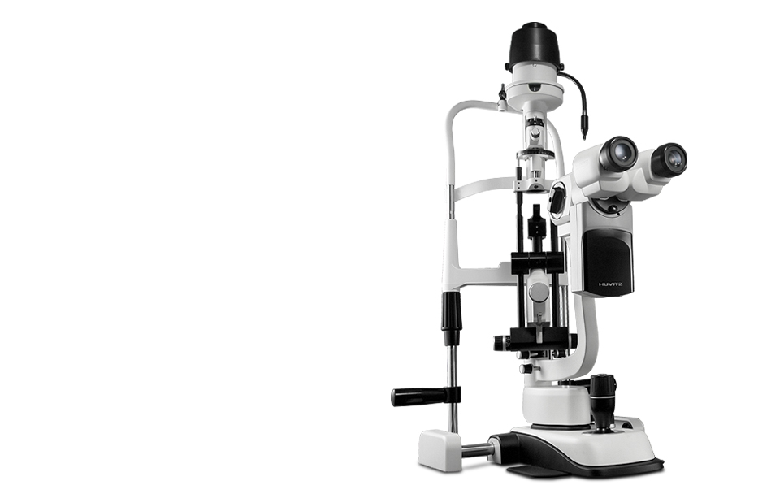

HS-7000
고품질 렌즈로 고화질 이미지는 기본, 자부심까지 만족합니다.
전문가가 선택하는 HIGH-END 슬릿램프-휴비츠 HS시리즈
- 
제품소개
- Microscope
- 글로벌 스탠더드 Galilean Converging Binocular Type 광학계를 채택하고 휴비츠만의 초정밀 고품질 렌즈 설계로 왜곡 률, 색 수차, 시야범위 등에서 월등한 품질우위를 제공합니다.
- Illuination
- 12Volt, 30Watt의 고휘도 발광 할로겐 램프의 광원을 채택, 매우 밝고 선명한 고화질의 이미지를 제공합니다.
- Magnification Control System
- 5단계로 배율 조절이 가능한 Magnification Control Drum 을 적용하여 화질 저하 없이 신속하게 배율 전환이 가능합니다.
- Integrated Control
- Trigger Button 이 장착된 Joystick 으로 미세한 움직임도 쉽게 조절가능하며 Image 장치와 연결하면 모니터를 보며 이미지를 바로 저장할 수 있습니다.
제품사양
| SLIT ILLUMINATION | 7000 | 7500 | 5000 | 5500 |
|---|---|---|---|---|
| Slit Length (mm) | 0.3~14 | 0.3~12 | 0.3~14 | |
| Slit Width (mm) | 0~14mm(continuous) | 0~12mm(continuous) | 0~14mm(continuous) | |
| Slit Projection | 1.167x | 1x | 1.167x | |
| Aperture Diaphragms | 12.5x | |||
| Filters | Cobalt Blue, Red-Free, Grey and Heat Absorption | |||
| Slit Rotation | 0°~180°continuous | |||
| Patient’s Eye/Prism Surface Working Distance | 0”,5”,10”,15”,20” | 0”~20” continuous | 0”,5”,10”,15”,20” | 0”~20” continuous |
| 80mm | 66mm | 80mm | 66mm | |
| MICROSCOPE | ||||
| Microscope | HS 7000 5x | |||
| Type | Galilean Converging Binocular | |||
| Magnification | 5 Position Rotating Drum | |||
| Eyepieces | 12.5x | 12.5x | ||
| Total Magnifications |
|
|||
| Real Fields of View (mm) | 38.5, 24.0, 15.0, 9.0, 6.0 mm | 38.5,22.2, 15.2, 10.5, 6.1 mm | ||
| Interpupilary Adjustment | Interpupilary Adjustment 55mm ~ 80 mm | |||
| BASE | ||||
| Vertical Movement | 28mm | |||
| Longitudinal Movement | 78mm | |||
| Lateral Movement | 98mm | |||
| Fine Base | 10mm | |||
| Power Supply | 100 ~ 240V AC 50/60 Hz 2.0A | |||
| Voltage Frequency | 50/60Hz | |||
| Power Consumption | 70VA | |||
| Instrument Voltage | 12V DC | |||
| Halogen Bulb | 12V 30W | |||
| Fixation Point Bulb | 3.4V 20mA | |||
| DIGITAL CAMERA | ||||
| Image Sensor | 1/2” Interline CCD | |||
| Image Size | up to 1,388 x 1,036 pixels | |||
| Cell Size | 4.65μm x 4.65μm | |||
| Resolution Depth | 8bit or 12bit Raw RGB, YUV 4 : 2 : 2 | |||
| Transmit Method | IEEE 1394 (6pin) | |||
| Transmit Speed | 400Mbps | |||
| Frame Rate | 15fps, 7.5fps, 3.75fps | |||
| Lens Mount | C-Mount | |||
| Photographing | External Trigger or Software Trigger | |||
| Dimension | 44mm (W) x 29mm (H) x 63mm (D) | |||
| Power Consumption | less than 3W(12V DC, from IEEE 1394 Cable) | |||
| Designs and details can be changed without prior notice for improvements. | ||||